1004B10 power unit with manual gearbox - r + r
- Path
- Procedures > 10 ENGINE UNIT > 1004 ENGINE AND POWER UNIT > 1004B power unit assembly > 1004B10 power unit with manual gearbox - r + r
- Kind
- repair procedure (removal / refitting; the operation number is the code)
- Applies to
- engines: 1.6 16v; all production periods
- Interactive page
- https://sloeber94.github.io/elrnDB-fMltpl/en/#/2891178
Applies to: engines: 1.6 16v; all production periods
 Removing
Removing
 Refitting
RefittingWith the ignition key in the OFF position, disconnect the battery negative terminal.
Place the car on a ramp.
4450B10 Front WHEEL (one) - R.R.
1048A10 AIR CLEANER FILTERING ELEMENT - REPLACE
1088D10 lower sleeve for coolant outlet from radiator - r + r
1088D14 upper sleeve for coolant inlet to radiator - r + r
1088E10 radiator cooling fan - r + r
1088B20 engine cooling radiator - r + r
1. Disconnect the clutch release cable by undoing the nut (1a) and disengaging it from its attachment on the gearbox (1b), then remove the cable (1c).
2. Undo the bolts (2a) and remove the air cleaner mounting bracket (2b).
3. Undo the nut (3a) securing the earth cable (3b) on the gearbox and move the cable aside.
4. Disconnect the electrical connection for the reversing lights.
 | Name | Connector |
|---|---|---|
4 | Reversing light switch |
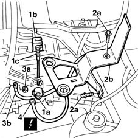
Applies to: engines: 1.6 16v; all production periods
1. Remove the collection tank from the battery cradle.
2. Undo press-fitted fuse boxes (2a) and open engine wiring collar (2b).
3. Unscrew nut (3a) and release earth lead ( 3b) from the control unit mount.
4. Undo the bolts retaining the battery cradle to the body.
5. Disconnect injection control unit electrical connections (5a) and (5b). Then remove battery cradle/injection control unit assembly (5c).
| Name | Connector |
|---|---|---|
5a | Engine management ECU |
| Name | Connector |
|---|---|---|
5b | Engine management ECU |
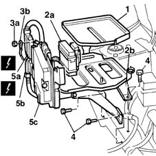
Applies to: engines: 1.6 16v; all production periods
1. Raise the ramp and unscrew bolts (1a) securing mount (1b).
Lower the lift.
2. Disconnect the gear selection transmission cable end (2a), remove the dust excluder (2b), then remove the flexible transmission cables unit and mounting from the relay unit.
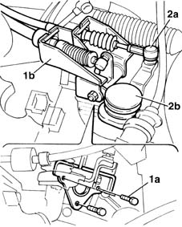
Applies to: engines: 1.6 16v; all production periods
1. Disconnect electrical connections (1a), (1b), (1c).
| Name | Connector |
|---|---|---|
1a | Front/engine junction |
| Name | Connector |
|---|---|---|
1b | Lambda sensor |
2. Undo fixing nut (2a) and separate starter motor supply lead (2b) from the battery positive terminal.
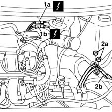
Applies to: engines: 1.6 16v; all production periods
1. Undo collars (1a) and disconnect coolant supply and return pipes (1b) from the heater.
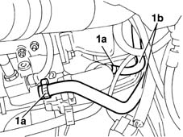
Applies to: engines: 1.6 16v; all production periods
1. Remove clip (1a) and disconnect accelerator cable (1b) from its fitting on the throttle body (1c). Then place to one side.
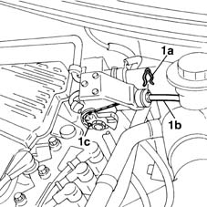
Applies to: engines: 1.6 16v; all production periods
1. Disconnect fuel delivery line (1a) from quick-release fitting (1b).
2. Open collar (2a) and disconnect brake servo vacuum pipe (2b).
3. Open collar (3a) and disconnect evaporation control system pipe (3b).
4. Open collar (2a) and disconnect coolant pipe (2b) to the throttle body.
5. Open the collars and release the pipes from the cylinder head.
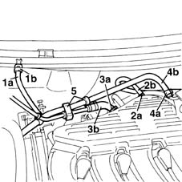
Applies to: engines: 1.6 16v; all production periods
Position a container to collect the power steering fluid.
1. Use a syringe to drain power steering fluid from the reservoir.
2. Disconnect piping (2a) from the power steering pump by opening retaining collar (2b).
3. Undo connector (3a) and disconnect pipe (3b) from the power steering pump.
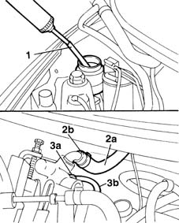
Applies to: engines: 1.6 16v; all production periods
Raise the lift about half of its travel.
1. Using a hammer and suitable chisel, relieve the staking on the wheel hub nut and undo it. Use a 36 mm diameter socket suitably machined so that it fits snugly on the whole surface of the nut.
2. Undo the bolts securing the shock absorber strut.
3. Undo the nut (3a) and using tool (3b), remove the tie-rod end from the steering knuckle.
 | Name | Country |
|---|---|---|
3b | Head extractor | 1.847.035.000 |
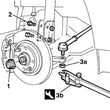
Applies to: engines: 1.6 16v; all production periods
1. Disconnect the electrical connection of the brake pad wear warning light.
2. Tip the brake disc/wheel hub assembly downwards.
3. Withdraw the drive shaft from its attachment on the wheel hub.
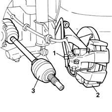
Applies to: engines: 1.6 16v; all production periods
1076A74 heat shield for exhaust pipe attachment to manifold - r r
1076B50 exhaust pipe attachment to engine - r + r
1008A44 rear rigid mount - r r
1008B20 power unit intermediate mount flexible block - replace
1. Secure the engine using a hydraulic hoist fitted with suitable chains and hooks.
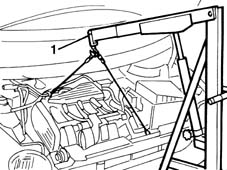
Applies to: engines: 1.6 16v; all production periods
1008A42 gear box left rigid mount - r r
1008B30 gearbox side mount flexible block - replace
1. Undo the bolts fixing the camshaft side support flexible mounting to the body.
Remove the hydraulic hoist and place the power unit on a stand.
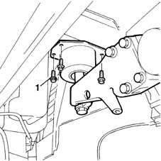
Applies to: engines: 1.6 16v; all production periods
Refitting
RemovingTake the power unit off the stand and secure with chains.
Prepare the engine compartment for insertion of the gearbox, making sure that all the electrical cables, pipes, etc. are positioned well out of the way.
When fitting the power unit, take care not to damage the individual components.
1008A42 gear box left rigid mount - r r
1008B30 gearbox side mount flexible block - replace
1008A44 rear rigid mount - r r
1008B20 power unit intermediate mount flexible block - replace
Tighten the bolts fixing the camshaft side support flexible mounting to the body.
 | Fastening | Component | Ø | Value (daNm) |
|---|---|---|---|---|
- | Bolt | FRONT RUBBER MOUNTS | M12 x 1.25 | 8 |
1076B50 exhaust pipe attachment to engine - r + r
1076A74 heat shield for exhaust pipe attachment to manifold - r r
Withdraw the drive shaft from its attachment on the wheel hub.
Connect the electrical connection of the brake pad wear warning light.
Tighten the nut securing the tie-rod end nut.
| Fastening | Component | Ø | Value (daNm) |
|---|---|---|---|---|
- | Nut | ADJUSTABLE STEERING LINKS | M10 | 4 |
Tighten the bolts securing the shock absorber strut.
| Fastening | Component | Ø | Value (daNm) |
|---|---|---|---|---|
- | Nut | FRONT HUB STEERING KNUCKLE. | M10 | 7 |
Tighten the nut securing the hub to the steering knuckle to torque.
| Fastening | Component | Ø | Value (daNm) |
|---|---|---|---|---|
- | Nut | FRONT HUB STEERING KNUCKLE. | M24 | 7 + 62° |
1. Using a hammer and suitable chisel, stake the wheel hub nut. The collar should be cut on the notch on the hub, on the side opposite that of tightening the nut, so that the safety lug prevents accidental loosening.
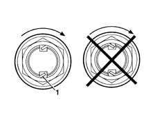
Applies to: engines: 1.6 16v; all production periods
Restore the power steering pump pipe connections.
Top up the power steering pump level
Use new collars to secure the pipes to the cylinder head
Use new collars to secure the coolant pipe to the throttle body
Use new collars to secure the evaporation control system pipe
Use new collars to secure the brake servo vacuum pipe
Connect the fuel pipe
Fit the accelerator control cable to the throttle body.
Use new collars to secure the coolant delivery and return pipes to the heater.
Tighten the retaining nut and connect the starter motor supply lead to the battery positive lead.
Connect the electrical connections.
| Name | Connector |
|---|---|---|
- | Front/engine junction |
| Name | Connector |
|---|---|---|
- | Lambda sensor |
| Name | Connector |
|---|---|---|
- | Reversing light switch |
Connect gear selection transmission cable end (2a), fit dust excluder (2b), then fit the flexible transmission cables unit and mounting to the relay unit.
Lower the ramp and tighten the mount retaining bolts.
Fit the battery holder/injection control unit assembly.
Connect the injection control unit connections.
Tighten the bolts securing the battery holder to the body.
| Fastening | Component | Ø | Value (daNm) |
|---|---|---|---|---|
- | Bolt | BATTERY SUPPORT/CAGE | M8 | 3 |
Position the earth lead on the control unit mount and tighten the nut.
Secure the fuse boxes to the brackets, and do up the collars to secure the engine wiring.
Position the collection tank in its seat on the cradle.
Tighten the bolts and secure the air cleaner mounting bracket.
Tighten the nut securing the earth lead to the gearbox.
Connect the clutch release control cable to the lever and gearbox fitting.
1088B20 engine cooling radiator - r + r
1088E10 radiator cooling fan - r + r
1088D14 upper sleeve for coolant inlet to radiator - r + r
1088D10 lower sleeve for coolant outlet from radiator - r + r
1048A10 AIR CLEANER FILTERING ELEMENT - REPLACE
4450B10 Front WHEEL (one) - R.R.
Remove the vehicle from the ramp.
With the ignition key in stop position, connect the battery negative terminal.
Topics linked from this page (18)
- 1008A42 gear box left rigid mount - r r
- 1008A44 rear rigid mount - r r
- 1008B20 power unit intermediate mount flexible block - replace
- 1008B30 gearbox side mount flexible block - replace
- 1048A10 AIR CLEANER FILTERING ELEMENT - REPLACE
- 1076A74 heat shield for exhaust pipe attachment to manifold - r r
- 1076B50 exhaust pipe attachment to engine - r + r
- 1088B20 engine cooling radiator - r + r
- 1088D10 lower sleeve for coolant outlet from radiator - r + r
- 1088D14 upper sleeve for coolant inlet to radiator - r + r
- 1088E10 radiator cooling fan - r + r
- 4450B10 Front WHEEL (one) - R.R.
- 5530B10 battery - r+r
- D4 Front/engine junction
- I20 Reversing light switch
- K40 Lambda sensor
- M010A Engine management ECU ( ENGINE )
- M010B Engine management ECU ( ENGINE )